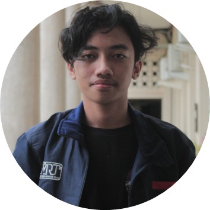

Muhammad Nabil Akbar Mustafa
Yogyakarta, Daerah Istimewa Yogyakarta
087784907593
|
mnabilam13@gmail.com
www.linkedin.com/in/nabil-akbar
Summary
Active student majoring in Electronics and Instrumentation at Gadjah Mada University. Interested in Hardware & Software Programming, IoT (Internet of Things), and PLC (Programmable Logic Controller). Highly motivated to learn new things and committed to develop my skills in those fields.
Education
Universitas Gadjah Mada
S1 Elektronika dan Instrumentasi (2021-Present)
SMAN 7 Yogyakarta
Natural Science
Organization & Team Experience
Elins Research Club (ERC) - Yogyakarta, Indonesia
Programmer, Linux and Network Division
Linux and Network division is a division that conducts research in the field of network systems such as IoT.
- Smart Parking, internal riset of Linux and Nerwork divison
G-Connect Project Indonesia - Yogyakarta, Indonesia
Hardware Programmer
- Develop a program for Early Warning System (EWS) integrated with IoT
Gadjah Mada Robotic Team (GMRT) - Yogyakarta, Indonesia
Hardware Programmer, Subtim Heroes
Heroes is one of the subteams in GMRT that competes in the Kontes Robot Abu Indonesia (KRAI).
- Develop new program code for the KRAI (Indonesian ABU Robot Contest) theme robot which changes every year
- Researching the robot actuator that will be used
Himpunan Mahasiswa Elektronika dan Instrumentasi - Yogyakarta, Indonesia
Expert staff of the Interest and Talent division
- Financial manager in division
- Chairman of Elins Competition 2022
- Responsible for developing the talents of Electronics and Instrumentation students.
Committee
Elins Planet 2022 - Yogyakarta, Indonesia
Staff of Security division
- Elins Planet is an orientation program for new students of Elins UGM. As a member of security, I am responsible for the discipline of new students in undergoing a series of Elins Planet events.
- Make rules for new students and other committee and provide penalty
HUT Elektronika dan Instrumentasi - Yogyakarta, Indonesia
Responsible for the valorant competition
- Make competition regulations, create a competition timeline, and carry out the competition
Chairman of Elins Competition 2022
- Elins Competition is one of the major events in the Electronics and Instrumentation Anniversary. As the chairman, I was responsible for determining the competitions to be held, dividing the person in charge of each competition, making race regulations, and organizing the course of the competition.
Technical Skills: C++, Arduino, Eagle, CX-Programmer (basic), HTML
Interests: Hardware & Software Programming, IoT (Internet of Things), dan PLC (Programmable Logic Controller)
Other
Hobbies